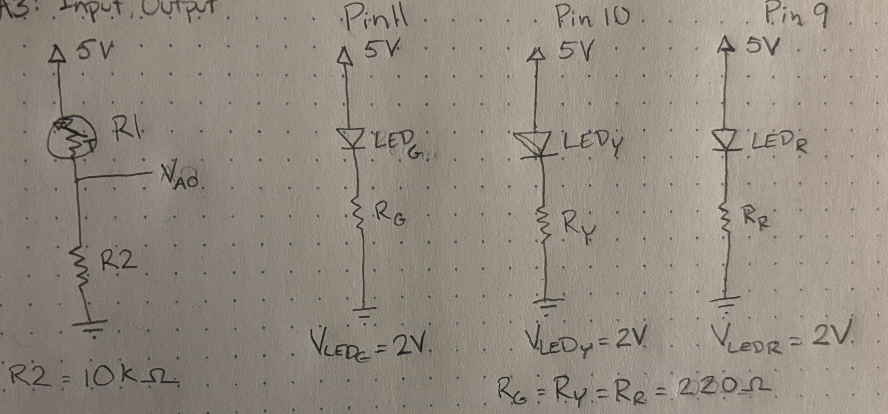
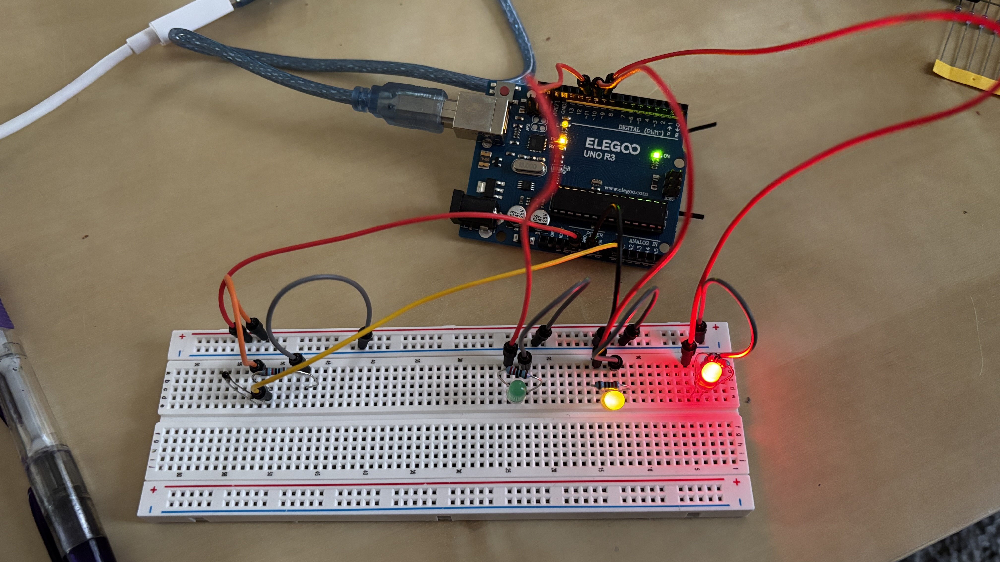
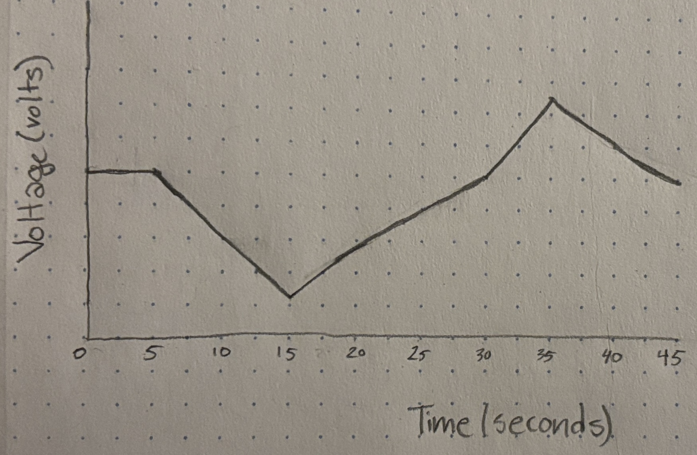

Vivian's Assignment 3!
Here is all the documentation for assignment 3!
Schematic

Resistor choices
I decided what value to use for R2 by finding the geometric mean of my expected lowest and highest resistance across the thermistor. This will ensure that R2/(RTherm+R2) will be close to 1 when R2 is high and close to 0 when R2 is low.
This item is expected to be used in the home so I predicted the lowest temperature to be 10℃ and the highest to be 40℃. Based on the datasheet for this thermistor the associated resistance range is 19,872 Ω - 5,330Ω. So the geometric average is 10,292Ω. (sqrt(19,872 * 5,330) = 10,292) Based on the resistors available in my kit I will use a 10kΩ resistor for R2.
I also calculated the greatest possible current through the thermistor circuit. The least possible equivalent resistance across the thermistor and R2 is 15,330Ω. According to Kirchoff’s Voltage Law the voltage across R2 must be 5V (5V-5V=0V). So, then I used Ohm’s Law to calculate the current to be 0.326 mA (1000(5V/15,330Ω))
The three LED circuits are mathematically equivalent so I knew RG,RY, and RR would be equivalent. I calculated the voltage drop across RG would be 3V (5V-2V=3V, based on Kirchoff’s Voltage Law). I decided I wanted the current to be 20mA because that is ideal for operating the LEDs and when current is at it’s maximum across all four circuits the total current through the arduino would be 60.326 mA which is within the total current limit. Now I know IR = 0.02 A and VR = 3V so I can use Ohm’s law to find that RG = 150Ω (3V/0.02A = 150). Based on the available resistors in my kit I will use 220Ω resistors to keep the current within the LEDs’ max current limit. This will decrease the current in each LED circuit and the total current which will not be an issue for this application.

Code
//establishes 11 as Green so pin 11 can be refered to as Green
int Green = 11;
//establishes 10 as Yellow so pin 10 can be refered to as Yellow
int Yellow = 10;
//establishes 9 as Red so pin 9 can be refered to as Green
int Red = 9;
//establishes the variable name analogMin as 400 because that is the minimum analog value read from the thermistor in this environment
int analogMin = 400;
//establishes the variable name analogMax as 455 because that is the maximum analog value read from the thermistor in this environment
int analogMax = 455;
//calculates the mean analog value to use as a center, would be the ideal room temperature in real application
int analogAvg = (analogMin + analogMax) / 2;
//function run once when Arduino is powered on
void setup() {
// initialize serial communication at 9600 bits per second:
Serial.begin(9600);
}
// the loop routine runs over and over again forever
void loop() {
// read the input on analog pin 0:
int thermValue = analogRead(A0);
//ensures that the analog value the green LED considers is between the associated minimum and the goal temperature
int thermValueConstG = constrain(thermValue, analogMin, analogAvg);
//ensures that the analog value the yellow LED considers is between the associated minimum and the maximum
int thermValueConstY = constrain(thermValue, analogMin, analogMax);
//ensures that the analog value the red LED considers is between the associated goal temperature and the maximum
int thermValueConstR = constrain(thermValue, analogAvg, analogMax);
//maps the 10 bit analog value from the constrained thermistor input to an 8 bit analog value so a brighter green LED indicates the temperature is proportionally colder than the goal temp
int GreenOutput = map(thermValueConstG, analogMin, analogAvg, 255, 0);
//established YellowOutput as the name of an integer variable
int YellowOutput;
//determines if the current temperature is above or equal to the goal temperature
if(thermValueConstY >= analogAvg){
//maps the 10 bit analog value from the constrained thermistor input to an 8 bit analog value so a brighter yellow LED indicates the temperature is proportionally closer to the goal temp
YellowOutput = map(thermValueConstY, analogMin, analogMax, 255, 0);
//prints message to serial monitor
Serial.println("Temperature is above goal");
//determines if the current temperature is below the goal temperature
}else{
//maps the 10 bit analog value from the constrained thermistor input to an 8 bit analog value so a brighter yellow LED indicates the temperature is proportionally closer to the goal temp
YellowOutput = map(thermValueConstY, analogMin, analogMax, 0, 255);
//prints message to serial monitor
Serial.println("Temperature is below goal");
}
//maps the 10 bit analog value from the constrained thermistor input to an 8 bit analog value so a brighter red LED indicates the temperature is proportionally warmer than the goal temp
int RedOutput = map(thermValueConstR, analogAvg, analogMax, 0, 255);
//sends the calculated analog value to the green LED
analogWrite(Green, GreenOutput);
//sends the calculated analog value to the yellow LED
analogWrite(Yellow,YellowOutput);
//sends the calculated analog value to the red LED
analogWrite(Red,RedOutput);
//delay in between reads for stability
delay(1);
}
Video
Questions
-
The variable resistor can be R1 or R2 because altering the resistance at either point in the circuit will affect the current through the circuit and therefore affect the VA0.
If circuit positions of 10K Ω resistor and thermistor were swapped:
Maximum equivalent resistance in entire circuit: 10,000Ω + 19,872Ω = 29,872Ω
Minimum equivalent resistance in entire circuit: 10,000Ω + 5,330Ω = 15,330Ω
Maximum current through circuit = 5V / 15,330Ω = 0.33 mA
Minimum current through circuit = 5V / 29,872Ω = 0.17 mA
Maximum voltage across R1 = 10,000Ω * 0.33 mA * (1/1000) = 3.3V
Minimum voltage across R1 = 10,000Ω * 0.17 mA * (1/1000) = 1.7V
Maximum VA0 = 5V - 1.7V = 3.3V
Minimum VA0 = 5V - 3.3V = 1.7V
The exact voltage read by VA0 would change in this orientation of the circuit, but it would still have the same functional capabilities. -

- If I had a 10-bit PWM and a 16-bit analog-to-digital converter, proportional map code would be mapping values 0 through 65,536 to values 0 through 1,023. In my code this would mean the analog min, max, and average would be between 0 and 65,536 and I would be mapping each relevant range to 0 through 1,023.